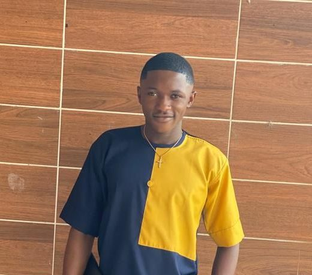

About me
Web developer and Graphic designer
I'm a passionate web developer and graphic designer, always looking for innovative ways to bring ideas to life. Whether it's crafting visually stunning websites or creating engaging graphics, I'm dedicated to delivering top-notch solutions that exceed expectations. Let's connect and see how we can bring your vision to reality!
0/L Certificate
I completed my Ordinary Level studies in 2022 at Government Bilingual High Ngaoundal, laying the foundation for my web development and graphic design career.
A/L Certificate
later, i obtained my Advance Level certificate in 2024 from Presbyterian Secondary School Douala, further solidifying my foundation for a successful career in web development and graphic design.
DUOLINGO Certificate
I earned my English proficiency certificate on Duolingo in January 2025, enhancing my language skills and enabling me to effectively communicate with clients and deliver high-quality work as a web developer and graphic designer.